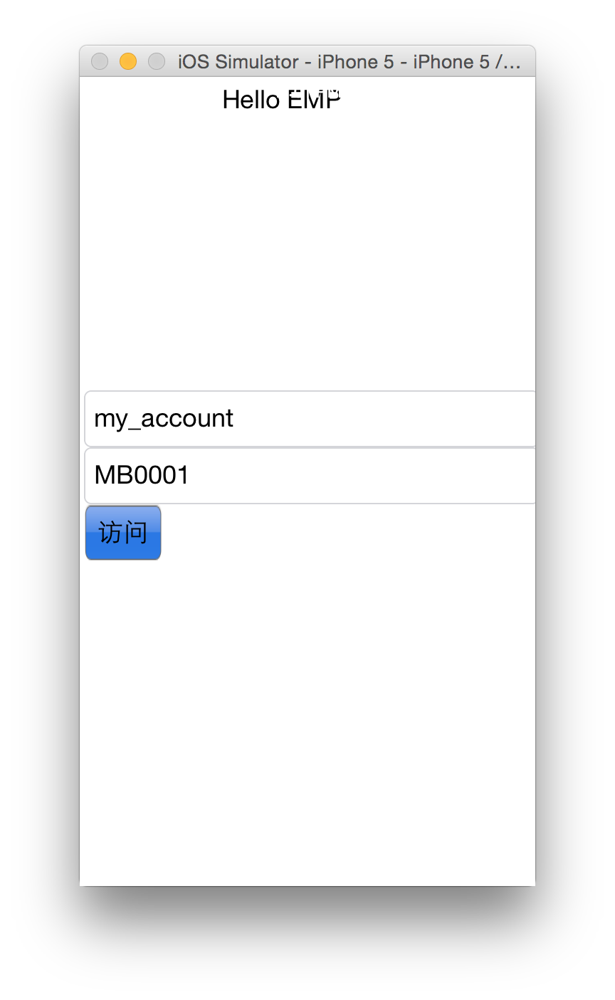
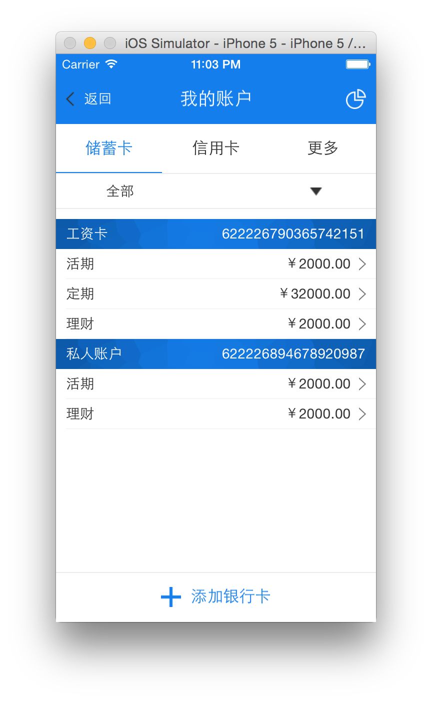

本章节将简要介绍如何使用"ert.lua"中封装的常用方法实现界面跳转以及使用slt编写lua脚本嵌套入xhtml界面。
以上一章节中账户查询界面为例，在此讲解如何使用slt和封装方法来进行界面编写。
在创建channel章节中我们创建了my_account channel,下面我们编写MB0001.xhtml界面。
根据上一章节中界面编写，我们已经编写完成了静态界面。
将hello_emp章节中起始界面中trancode和channelId输入为MB0001和my_account.

在channel需求确定后，前端开发人员会和后端开发人员共同确定界面对应接口规范，此接口有唯一tranCode， 规范中规定此接口上送参数和返回json数据报文格式。
前端开发人员根据接口规范将json报文生成然后填入 MB0001.json中，假定此时json报文为：
{
"response": {
"error_code": "000000",
"error_msg":"",
"debit_card": [
{
"name": "工资卡",
"card_num":"622226790365742151",
"detail":[
{
"type":"活期",
"balance":"2000.00",
},
{
"type":"定期",
"balance":"32000.00",
},
{
"type":"理财",
"balance":"2000.00",
}
],
"kind":"储蓄卡"
},
{
"name": "私人账户",
"card_num":"622226894678920987",
"detail":[
{
"type":"活期",
"balance":"2000.00",
},
{
"type":"理财",
"balance":"2000.00",
}
],
"kind":"储蓄卡"
}
],
"credit_card":[
{
"name": "私人账户",
"card_num":"622226894678909174",
"detail":[
{
"type":"活期",
"balance":"2000.00",
}
],
"kind":"信用卡"
}
]
}
}
在MB0001.xhtml的content节点前添加如下代码:
#{
this = ert.channel:get_page("my_account","MB0001");
local data = this:get_data();
local table = json:objectFromJSON(data);
this.json = table;
local acc_list = table["response"]["debit_card"];
this.acc_list = acc_list;
}#
将select中数据修改为slt代码：
<select class="select_card_custom">
<option class="ert_option">全部</option>
#{for key,acc in pairs(this.acc_list) do}#
<option class="ert_option">#{= acc["card_num"]}#(#{= acc["name"]}#)</option>
#{end}#
</select>
#{for key,acc in pairs(this.acc_list) do}#
<!--表头-->
<div class="ert_w320_h50_w,div_card_custom" valign="middle" border="0">
<label class="ert_f16g_l10,lbl_card_custom">#{= acc["name"]}#</label>
<label class="ert_f16b_r10,lbl_card_custom">#{= acc["card_num"]}#</label>
</div>
<!--表体-->
<div class="div_card_info" border="0" align="right">
<table class="tbl_card_info" border="0" separator="#EEEEEE">
#{for key,acc_detail in pairs(acc["detail"]) do }#
<tr class="cmm_ui_tr_lsi_tr,tr_card_custom" valign="middle">
<td>
<label>#{= acc_detail["type"]}#</label>
<div class="cmm_ui_tr_lsi_div_right" border="0" valign="middle" align="right">
<label>￥#{= acc_detail["balance"]}#</label>
<div class="cmm_ui_tr_lsi_div_arrow" valign="middle" border="0" align="right">
<img src="right_arrow.png" class="cmm_ui_tr_lsi_img_arrow"></img>
</div>
</div>
</td>
</tr>
#{end}#
</table>
</div>
#{end}#
此时点击访问进入此界面：

下一界面为显示所选账户交易明细，假定根据接口文档中描述，下一接口参数为账号，那么需要传入参数为账号和账户类型。
为table中tr添加onclick事件：
<tr class="cmm_ui_tr_lsi_tr,tr_card_custom" valign="middle" onclick="this.next_step('#{= acc["card_num"]}#','#{= acc_detail["type"]}#')">
在MB0001.lua中添加this.next_step事件。
this = ert.channel:get_page("my_account","MB0001"); -- 获取当前界面实例，便于使用this中已经存在数据
local next_channelId = "my_account";
local next_trancode = "MB0002";
function this.next_step(card_num,card_type)
local post_boby = {id = next_channelId, tranCode = next_trancode,
card_num=card_num,card_type = card_type};
ert.channel:next_page(next_channelId, next_trancode, post_boby);
end;
点击tr进入下一页。
至此实现界面使用slt编写和跳转到下一页。